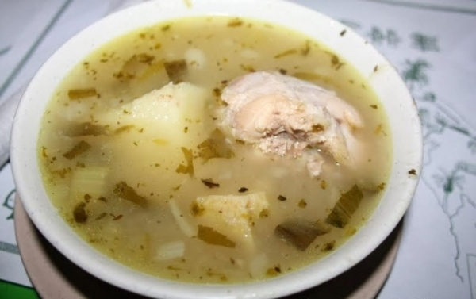
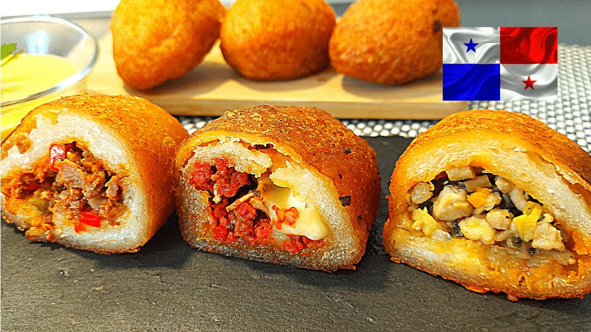
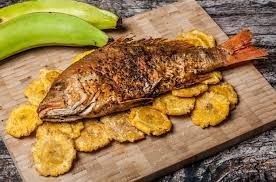

Sancocho, carimañolas y pescado con patacones.

Sancocho panameño
Sopa
Ingredientes
- 1 pollo en presas
- 1 kg de ñame
- 1 cebolla y 3 dientes de ajo
- Culantro al gusto
- 2 mazorcas, sal y agua
Pasos
- Sazonar el pollo y dorarlo ligeramente en una olla grande.
- Agregar cebolla, ajo, culantro y agua; cocinar 30 minutos.
- Incorporar el ñame y las mazorcas en trozos; hervir hasta que estén tiernos y el caldo espese.
- Rectificar la sal y servir caliente con arroz blanco.

Carimañolas
Entrada
Ingredientes
- 1 kg de yuca
- 300 g de carne molida
- 1 cebolla y 1 pimentón
- 2 dientes de ajo
- Sal y aceite para freír
Pasos
- Cocer la yuca en agua con sal, retirar la fibra central y triturar hasta formar una masa.
- Sofreír cebolla, ajo y pimentón; añadir la carne y cocinar hasta dorarla.
- Formar porciones de masa, rellenarlas con carne y cerrarlas en forma alargada.
- Freír en aceite caliente hasta que estén doradas y escurrir sobre papel absorbente.

Pescado frito con patacones
Plato fuerte
Ingredientes
- 2 pescados enteros limpios
- 2 plátanos verdes
- 2 dientes de ajo
- Limón, sal y pimienta
- Harina y aceite para freír
Pasos
- Hacer cortes al pescado, sazonar con ajo, limón, sal y pimienta, y enharinar ligeramente.
- Freír el pescado en aceite caliente hasta que esté dorado y cocido por dentro.
- Cortar los plátanos, freírlos una vez, aplastarlos y freírlos de nuevo hasta que queden crujientes.
- Escurrir, salar los patacones y servirlos junto al pescado.